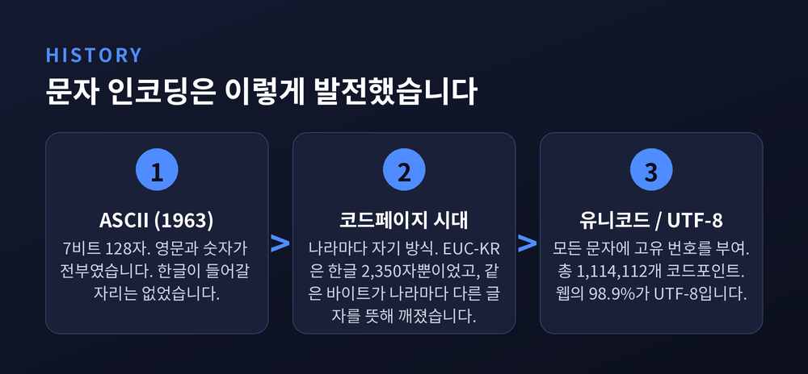
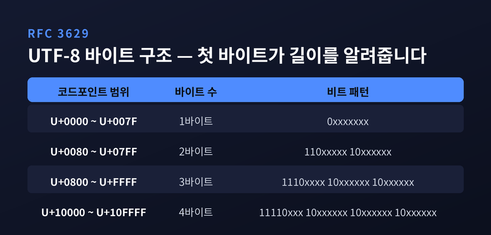
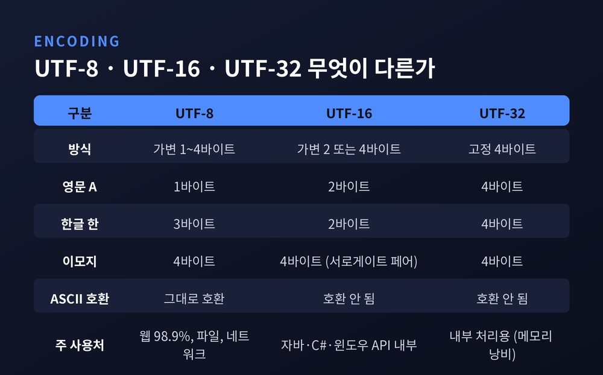
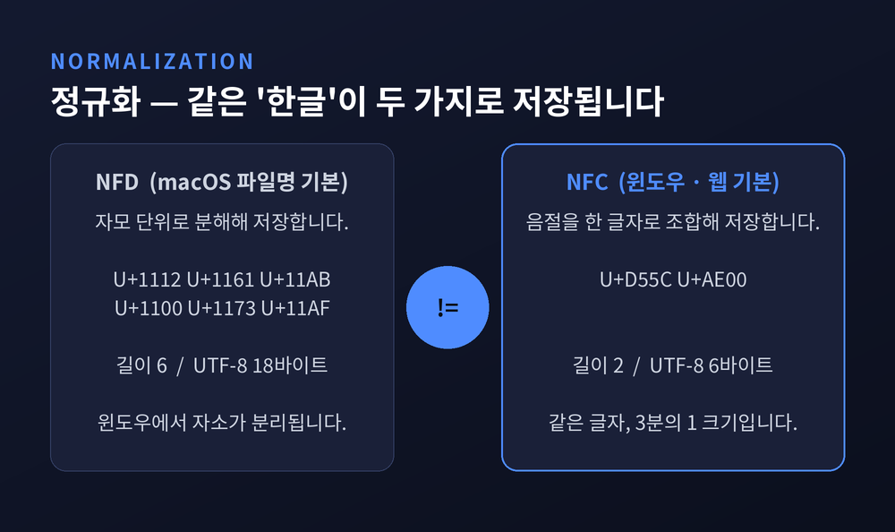
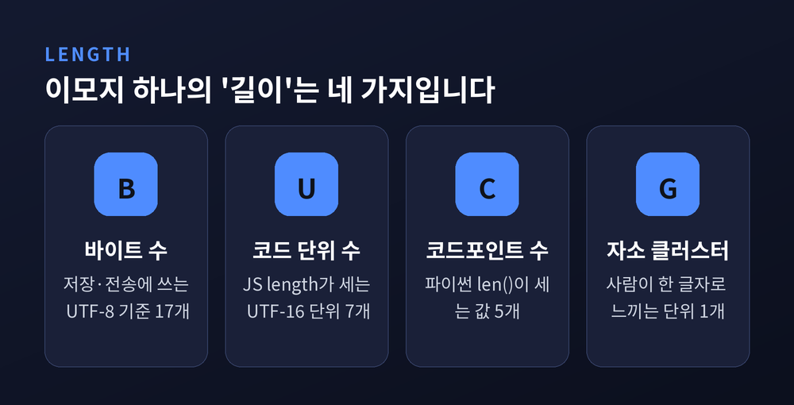

이번 글에서는 유니코드와 문자 인코딩의 원리를 정리해 보겠습니다. 한글이 왜 3바이트인지, 이모지 하나가 왜 25바이트나 되는지, 맥에서 보낸 파일명이 왜 윈도우에서 자소가 분리되는지를 차례로 다룹니다. 오래된 이야기 같지만, 오늘도 어딘가에서 글자가 깨지고 있습니다.
세 줄 요약
모든 것은 ASCII에서 출발합니다.
작업은 1960년 10월 6일 미국표준협회 X3.2 소위원회의 첫 회의로 시작됐습니다. 표준 X3.4-1963은 1963년 6월 17일 공표됩니다.
사양은 단순합니다. 7비트 이진 코드, 표현 가능한 문자는 2의 7제곱, 곧 128자. 영문 대문자와 숫자, 문장부호, 제어문자가 전부였습니다. 최초판은 28개 자리를 미할당으로 남겨 두었습니다.
여유가 있어 보이지만 착시입니다. 128자는 영어를 담기에 충분하고, 그 외의 언어에는 애초에 자리가 없습니다. 한글도 한자도 아랍어도 들어갈 틈이 없었습니다.
지금도 이 유산은 살아 있습니다. 'A'는 U+0041이고 바이트로는 0x41입니다. 60년 전 정한 번호가 그대로입니다.
ASCII가 부족하니 나라마다 자기 방식을 만들었습니다. 이것이 코드페이지입니다.
한국의 경우 EUC-KR(완성형)이 있었습니다. KS C 5601:1987을 기반으로 자주 쓰는 한글 2,350자를 지원했습니다.
문제는 산수입니다. 현대 한글로 조합 가능한 음절은 11,172자입니다. 그중 2,350자만 담았으니 나머지 8,800여 자는 표현할 방법 자체가 없었습니다. 글자가 물음표로 바뀌거나, 구성 자모가 없어 특정 글자를 아예 입력하지 못하는 일이 실제로 벌어졌습니다.
그래서 마이크로소프트가 CP949(확장완성형)를 내놓습니다. EUC-KR의 확장으로, 빠진 나머지 약 8,000여 자를 추가로 인코딩했습니다.
땜질은 됐지만 구조적 결함은 남았습니다. 코드페이지 방식에서는 같은 바이트 값이 나라마다 다른 글자를 뜻합니다. 어떤 코드페이지로 읽어야 하는지 모르면 글자는 깨집니다. 이른바 '뷁어'의 정체가 이것입니다.
CP949는 아직 한국어 윈도우 계열에 남아 있습니다. 오래된 CSV를 열었을 때 한글이 무너지는 장면을 보신 적이 있다면, 바로 그 흔적입니다.

유니코드의 해법은 명쾌합니다. 세상 모든 문자에 고유 번호를 하나씩 붙이자.
유니코드 컨소시엄은 모든 문자 체계의 각 문자에 이름과 0부터 0x10FFFF까지의 16진수 번호를 부여합니다. 이 번호가 코드포인트입니다.
전체 크기는 1,114,112개입니다. 범위는 0x000000부터 0x10FFFF까지입니다.
이 공간은 평면(Plane)으로 나뉩니다. 한 평면은 65,536개의 연속된 코드포인트 묶음이고, 총 17개 평면(0번~16번)이 있습니다. 17 곱하기 65,536은 정확히 1,114,112입니다.
0번 평면이 BMP(기본 다국어 평면)입니다. 흔히 쓰는 문자 대부분이 여기 있습니다. 1번부터 16번까지는 보조 평면이라 부릅니다. 이모지가 사는 동네가 이쪽입니다.
가장 중요한 구분을 짚고 넘어가겠습니다. 코드포인트는 번호일 뿐, 저장 방식이 아닙니다. U+D55C(한)이라는 번호를 실제 바이트로 어떻게 바꿀지는 별개의 문제입니다. 그 규칙이 UTF-8이고 UTF-16이고 UTF-32입니다.
현재 상황은 이렇습니다. Unicode 17.0이 2025년 9월 9일 공개됐고, 4,803자가 추가되어 총 159,801자가 됐습니다. 지원 문자 체계는 172개입니다.
159,801자와 1,114,112개. 아직 86% 이상이 비어 있습니다. 이번에는 자리를 넉넉히 잡은 셈입니다.
UTF-8은 1992년 9월 켄 톰슨이 롭 파이크의 설계 기준에 따라 고안했습니다. Plan 9 운영체제에서 쓸 목적이었습니다. FSS-UTF, UTF-2를 거쳐 지금의 이름이 됐습니다. 표준 문서는 RFC 3629(2003년 11월, STD 63)입니다.
핵심은 가변 길이입니다. 문자마다 1바이트에서 4바이트를 씁니다.
규칙은 이렇습니다. 1바이트 시퀀스는 최상위 비트가 0입니다. n바이트 시퀀스의 첫 바이트는 상위 n개 비트를 1로 놓고 이어서 0을 붙입니다. 뒤따르는 바이트는 모두 10으로 시작하며 6비트씩 실어 나릅니다.

이 설계가 영리한 지점이 있습니다.
순수 ASCII 문자열은 그대로 유효한 UTF-8 문자열입니다. 그리고 ASCII 바이트 값은 다른 자리에 절대 나타나지 않습니다. 덕분에 ASCII 기준으로 파싱하는 파일시스템이나 C 라이브러리와 그대로 호환됩니다. 첫 바이트만 보면 시퀀스 전체 길이를 알 수 있어 스트림 어디서든 문자 경계를 찾을 수 있습니다. 바이트 값 C0, C1, F5부터 FF까지는 아예 등장하지 않습니다.
그리고 한 글자를 인코딩하는 유효한 방법은 오직 하나뿐입니다. RFC 3629의 표현을 그대로 옮기면 "there is only one valid way to encode a given character"입니다.
실제 바이트를 보겠습니다. RFC 3629 문서에 실린 예시입니다.
U+D55C U+AD6D U+C5B4 — '한국어' 세 글자입니다. UTF-8로는 이렇게 됩니다.
ED 95 9C EA B5 AD EC 96 B4세 글자에 9바이트. 한 글자당 3바이트입니다.
여기서 씁쓸한 사실 하나를 인정해야 합니다. 영어는 1바이트, 한글은 3바이트입니다. UTF-8은 ASCII에 유리하도록 설계된 규칙이고, 한글은 구조적으로 손해를 봅니다. 같은 내용을 담아도 한국어 텍스트가 영어보다 무겁습니다.
그럼에도 UTF-8은 사실상 승자가 됐습니다. 2026년 1월 기준 조사 대상 웹사이트의 98.9%가 UTF-8을 사용합니다. 상위 1,000개 페이지 기준으로는 99.9%입니다.
예전엔 16비트면 충분하다고 봤습니다. 65,536자면 넉넉하다는 계산이었습니다. 지금은 그 전제가 무너진 자리에 UTF-16의 복잡함만 남았습니다.
2의 16제곱으로 부족해지자 IEEE는 문자당 4바이트를 쓰는 UCS-4를 내놓습니다. 유니코드 컨소시엄은 "4바이트는 메모리와 디스크를 너무 낭비한다"며 반대했습니다. 타협안이 UTF-16이었고, 1996년 7월 유니코드 2.0과 함께 도입됩니다.
지금도 UTF-16은 깊숙이 박혀 있습니다. C#은 문자열에 UTF-16을 쓰고, 자바는 메모리상 모든 문자열을 UTF-16으로 저장합니다. 자바스크립트도, 현재 지원되는 모든 윈도우 버전의 OS API도 마찬가지입니다.
문제는 BMP를 벗어나는 문자입니다. 16비트로는 담기지 않습니다. 그래서 서로게이트 페어가 등장합니다.
상위 서로게이트는 U+D800부터 U+DBFF, 하위 서로게이트는 U+DC00부터 U+DFFF입니다. 두 개를 붙여 하나의 문자를 표현합니다.
변환 공식은 이렇습니다.
코드포인트 = 0x10000 + ((상위 - 0xD800) × 0x400) + (하위 - 0xDC00)각 단위가 10비트씩 실으니 2단위면 20비트입니다. 2의 20제곱은 1,048,576. 보조 평면(U+10000~U+10FFFF)을 정확히 덮습니다. 억지스럽지만 앞뒤는 맞습니다.
실제로 웃는 얼굴 이모지 U+1F600은 UTF-16에서 0xD83D와 0xDE00 두 조각으로 저장됩니다.
기억할 점이 하나 있습니다. D800부터 DFFF까지는 문자가 아닙니다. RFC 3629는 이 구간의 인코딩을 명시적으로 금지합니다. UTF-16 전용으로 예약된 자리이고, 직접 문자를 나타내지 않습니다.
UTF-32는 어떨까요. 문자마다 4바이트로 고정이라 인덱싱이 단순합니다. 대신 메모리를 크게 낭비합니다. 그래서 내부 처리용으로만 가끔 쓰입니다.

한글은 유니코드에서 Hangul Syllables 블록(U+AC00 ~ U+D7AF)을 씁니다. 현대 한글 음절 11,172자가 미리 조합된 형태로 들어 있습니다. 실제 할당이 끝나는 지점은 U+D7A3입니다.
11,172라는 숫자가 어디서 왔는지 보면 재미있습니다.
초성 19자, 중성 21자, 종성은 없거나 27자이니 28가지. 19 × 21 × 28 = 11,172. 블록 크기와 정확히 맞아떨어집니다. 조합형 문자 체계인 한글의 성질이 숫자에 그대로 드러납니다.
그런데 이 블록에는 사연이 있습니다.
1996년, ISO/IEC 10646의 Amendment 5와 Unicode 2.0이 한글 블록을 옮기고 확장했습니다. 그 결과 이전 버전으로 저장된 한글 데이터가 전부 무효가 됐습니다. 표준이 데이터를 배신한 셈입니다.
이런 비호환 변경이 허용된 이유가 서늘합니다. "주요 구현체도 없고 의미 있는 양의 한글 데이터도 없었다"는 것이었습니다.
이 사건은 "Korean mess"라는 이름으로 RFC 3629 문서에 박제되어 있습니다. 관련 위원회들은 다시는 이런 비호환 변경을 하지 않겠다고 서약했습니다. 원문의 표현은 "never, ever again"입니다.
이모지는 그림 파일이 아닙니다. 문자입니다. 코드포인트를 받은 어엿한 유니코드 문자입니다.
2025년 9월 9일 기준 유니코드 표준에는 3,953개의 이모지가 있습니다. 피부색과 성별 변형을 모두 포함한 수치입니다.
흥미로운 것은 조합 방식입니다. 여기서 ZWJ(Zero Width Joiner, U+200D)가 등장합니다. 폭이 0인 투명한 문자인데요, 이 녀석이 두 이모지를 이어 붙여 새로운 하나로 만듭니다. 현재 약 600개의 ZWJ 시퀀스가 정의되어 있습니다.
가족 이모지가 대표적입니다.
남자 + ZWJ + 여자 + ZWJ + 여아 + ZWJ + 남아 = 가족 이모지 하나눈에는 그림 하나로 보입니다. 속은 이렇습니다. 코드포인트 7개, UTF-16 코드 단위 11개, UTF-8로는 25바이트. 글자 하나에 25바이트입니다. 한글 8글자보다 무겁습니다.
피부색도 같은 원리입니다. U+1F3FB부터 U+1F3FF까지 5개의 피부색 모디파이어가 이모지 뒤에 붙어 색을 바꿉니다. 피부에 미치는 자외선의 영향을 연구하려고 만든 피츠패트릭 척도를 가져다 쓴 것입니다. U+1F3FB가 가장 밝은 톤입니다.
정리하면 이렇습니다. 이모지는 하나의 그림이 아니라 여러 문자를 이어 붙인 문장에 가깝습니다. 렌더러가 그 조합을 읽고 그림 하나로 그려낼 뿐입니다.
지원하지 않는 환경에서 가족 이모지가 사람 넷으로 흩어져 보이는 이유가 여기 있습니다. 조합이 풀린 것입니다.
같은 글자를 여러 방식으로 표현할 수 있다는 점이 문제를 만듭니다.
RFC 3629는 이 문제를 직접 경고합니다. 악센트가 붙은 e는 미리 조합된 U+00E9로도, U+0065와 U+0301(e + 결합 악센트)의 시퀀스로도 표현됩니다. 눈에는 똑같습니다. 컴퓨터에게는 다른 문자열입니다.
해법이 정규화(Normalization)입니다.
한글로 확인해 보겠습니다. '한글' 두 글자입니다.
| 형식 | 코드포인트 | 길이 | UTF-8 바이트 |
|---|---|---|---|
| NFC | U+D55C U+AE00 | 2 | 6 |
| NFD | U+1112 U+1161 U+11AB U+1100 U+1173 U+11AF | 6 | 18 |
화면에는 둘 다 '한글'로 보입니다. 길이는 2와 6, 바이트는 6과 18. 세 배 차이입니다. 그리고 두 문자열을 비교하면 결과는 거짓입니다.
여기서 그 유명한 사고가 시작됩니다.
macOS는 파일명에 기본적으로 NFD를 쓰고, 윈도우는 NFC를 씁니다.
애플은 정준 분해로 모든 음절을 쪼개 자음과 모음 코드로 저장합니다. '각'을 'ㄱ + ㅏ + ㄱ'으로 보관하는 식입니다. 반면 NFC는 '각'을 한 글자로 저장합니다.
그래서 맥에서 파일을 복사하거나 메일로 보내면, 윈도우에서 파일명의 자음과 모음이 분리되어 보입니다. 압축 파일을 풀었더니 이름이 흩어져 있던 경험, 한 번쯤 있으실 겁니다.
버그가 아닙니다. 양쪽 다 표준을 지키고 있습니다. 다만 다른 형식을 골랐을 뿐입니다.
해결은 어렵지 않습니다. 파이썬 unicodedata 모듈의 normalize()로 NFD를 NFC로 바꾸면 됩니다. convmv 같은 도구도 같은 일을 합니다.

"이 문자열의 길이는 몇인가."
간단해 보이는 질문입니다. 답은 최소 네 가지입니다.
자소 클러스터(grapheme cluster)는 사용자 관점에서 한 덩어리로 취급되어야 하는 코드포인트 시퀀스입니다. UAX #29에 정의되어 있습니다. 쉽게 말해 사람이 '한 글자'라고 느끼는 단위입니다.
언어마다 세는 기준이 다릅니다.
자바스크립트는 UTF-16 기반이라 코드 단위를 셉니다. 가족 이모지의 .length는 11입니다. 파이썬 3은 코드포인트를 셉니다. len()은 7입니다. 사람이 보기에는 1입니다.
이 분야에서 유명한 글의 제목이 사정을 요약합니다. "It's not wrong that 🤦🏼♂️.length == 7" — 7이 나오는 게 틀린 게 아니라는 겁니다.
실제로 이 이모지 하나는 코드포인트 5개, UTF-16 코드 단위 7개, UTF-8로 17바이트, 눈에 보이는 글자 1개입니다. 어느 숫자도 틀리지 않았습니다. 묻는 질문이 다를 뿐입니다.
제대로 세려면 전용 도구가 필요합니다. 자바스크립트는 Intl.Segmenter, 파이썬은 ugrapheme 같은 라이브러리를 씁니다.

정리 삼아 몇 가지를 적어둡니다.
1. UTF-8을 기본값으로 삼습니다. 웹사이트의 98.9%가 이미 그렇습니다. 특별한 이유가 없다면 따라가는 편이 낫습니다.
2. 비교하기 전에 정규화합니다. RFC 3629가 직접 경고한 대목입니다. 같은 것을 뜻하는 시퀀스가 여러 개이므로 문자열 매칭, 인덱싱, 검색, 정렬, 정규식에 문제가 생깁니다. 자격증명과 접근제어 목록의 식별자를 대조하는 상황을 예로 들고 있습니다.
3. 잘못된 시퀀스 디코딩을 막습니다. RFC 3629는 이것을 MUST로 규정합니다. 순진한 구현은 과길이 시퀀스 C0 80을 U+0000으로 디코딩할 수 있습니다. 한가한 이야기가 아닙니다. 2001년 웹 서버를 공격한 바이러스가 2F C0 AE 2E 2F, 곧 "/../"의 불법 인코딩을 이용한 익스플로잇을 실제로 사용했습니다. 인코딩은 보안 문제이기도 합니다.
4. 범위를 U+10FFFF로 제한합니다. 제한하지 않으면 5바이트, 6바이트 시퀀스가 들어와 버퍼 오버플로가 날 수 있습니다.
5. 맥과 윈도우를 오가는 파일명은 NFC로 맞춥니다.
6. 문자열을 함부로 자르지 않습니다. 코드포인트나 코드 단위 기준으로 자르면 자소 클러스터가 깨집니다. 이모지가 반토막 나는 화면을 보신 적이 있다면 그 원인입니다.
7. BOM은 함부로 벗기지 않습니다. RFC 3629는 정말 필요할 때만 제거하라고 권합니다.
끝으로 한 마디만 더 드리겠습니다.
이 글에서 다룬 내용이 완전하지는 않습니다. 정렬 규칙, 대소문자 변환, 양방향 텍스트처럼 더 험한 영역이 남아 있습니다. 저도 여전히 헷갈리는 부분이 있습니다.
다만 한 가지는 분명해졌습니다. 우리가 무심히 입력하는 글자 하나에도 60년의 결정이 쌓여 있습니다. 1963년에 정한 128개의 자리, 1996년의 서약, 2003년에 못 박은 네 줄짜리 표. 그 위에 지금의 한글과 이모지가 서 있습니다.
"글자는 저절로 보이지 않습니다. 누군가 번호를 정했기 때문에 보입니다."
한글이 3바이트라는 사실이 억울하지 않냐고 물으신다면, 저는 이렇게 답하겠습니다. 자리가 있다는 것만으로도 충분합니다. 한때는 그 자리조차 없었으니까요.